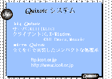

<html>
<head>
<title> Slide No.16 </title>
</head>

<frameset rows="430,130">

<noframes>
<body>
<a href="GIF/slide16.GIF"></a>

<a href="AU/voice16.au">
	</a>[277K]<p>
<!--		-->
私達は、2つの <b> Quixote </b> システムを開発しました。

一つはサーバ、クライアント形式の
<a href=""> <b> big-Quixote </b> </a> と
呼ばれているシステムで、<b> KLIC </b> 上で動き、
<b> Quixote </b> の全ての機能を実現する目的で作られました。
そのため大きなシステムとなりました。<p>

もう一つのシステムは、
<a href=""> <b> micro-Quixote </b> </a> と呼ばれ、
<b> Quixote </b> の主要機能に限り、全てを <b> C </b> で実装し、
コンパクトなシステムとしました。<p>

この２つのシステムは、ここに書かれているアドレスから
持っていくことができます。使ってみて下さい。<p>
<!--		-->

<hr>
<a href="slide15.html" target="_top">前の OHP へ</a>
<br><br>
<a href="HomePage.html" target="_top">OHP の一覧へ</a>
</body>
</noframes>

<frame src="onlyslide16.html">
<frame src="buttonexpla16.html">

</frameset>

</html>
